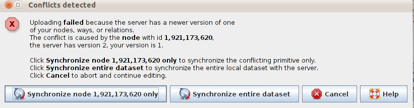
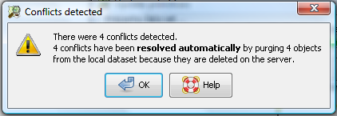
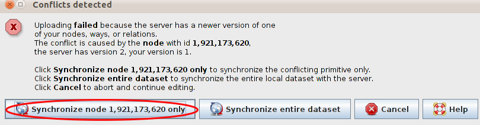
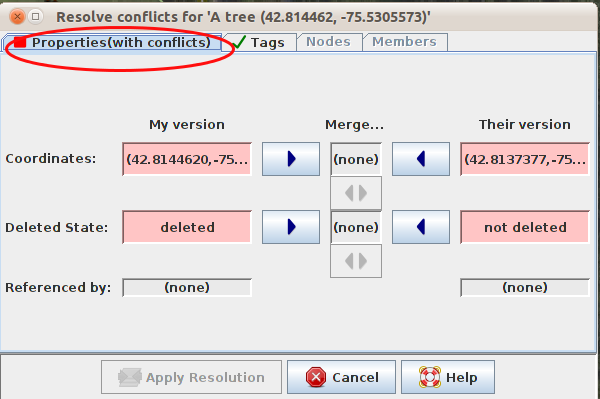
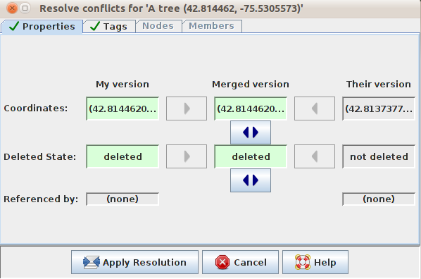
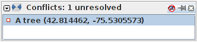
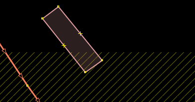

Module 3: Dealing With Conflicts¶
Learning Objectives
Identify conflicts
Understand why conflicts occur
Solve conflicts
Sometimes you are working in JOSM and when you upload all of your beautiful edits you get a nasty message complaining about a conflict.
{kind=link}
What happened is essentially this: You downloaded data, which included a point which we will call Node A. Then while you were editing, another user else also downloaded Node A, changed it, and saved the changes back on OpenStreetMap. Now when you try to upload your version of Node A, it is different from the one saved on OSM. Therefore JOSM doesn’t know which version of Node A should be saved.
1. Conflicts¶
Sometimes, JOSM is able to figure out what to do with conflicts on its own, and it will give you a message like this:
This means that JOSM has automatically decided that items in your local dataset will not be uploaded to the main server because they have already been deleted by another user.
In some conflicts, however, there is no easy action for JOSM to take and so it leaves the decision up to the user to determine what to do. This means it is up to you to resolve the conflicts.
{kind=link}
This tells you to look at all of your conflicts in Layer 1 in the Dialog List box.¶
This window provides you with a warning as to whether you are likely to experience a conflict with your edits. If you check on the server you will be able to fix the editing issues that would arise.¶
This warning tells you that JOSM failed to delete a node due to it still being referenced in a way. In order to remedy this, the user has to go back into JOSM and resolve the conflict before uploading the data.¶
2. Conflict resolution¶
The process of resolving a conflict is simple, although it can appear confusing at first in JOSM. Basically, for every conflict JOSM will present you with two choices - your version of an object and the one that is on the server. You need to choose whether to keep your version, or whether the new version on the server should remain.
You might think, “of course my version is going to be better!”. And maybe you’re right. But think back to our example at the start of this module. Perhaps while you were busy editing, another mapper added a lot of information to one of the nodes in your data set. If you choose your version over their version, you will lose all of that valuable information that they added. Hence you should consider keeping their version, or merging it with your own.
When a conflict window pops up, it is usually best to choose the button Synchronize … only. You may need to do this for more than one object, but it is best to resolve conflicts one at a time.
After clicking this button, a pop-up window will appear detailing the conflict. The error message may look complicated, but it is not. You can see what type of conflict you have from the following symbol in the top tab.
The conflict in our example refers to the properties, such as the location and existence of the object. This is why the coordinates and deleted state are listed.
Types of conflict are:
Properties: Object has been moved (coordinates) or deleted
Tags: Tags do not match
Nodes: There is a differences in the list of nodes in two ways
Members: There is a difference in the list of members in a relation
Conflicts only appear with two different edits at a time. If there are three or more conflicts, then a chain of conflicts will pop up. Therefore you have to choose or merge with only two conflicts at a time. You can choose your version, the other version or, at times, merge the two.
In our example we do not have the option of merging. Click on the first column, or My version if you believe that your edits are correct. Click on Their version if you think that the other edits are better.
Once you have selected which version you think is best, click Apply Resolution.
You can open the Conflicts panel to see a list of conflicts.
The total number of unresolved conflicts is shown in the header. Select or resolve a conflict by clicking on it. This is useful when you have many conflicts to deal with.
You cannot upload your changes until this list is empty.
3. Ways to avoid conflicts¶
Upload frequently¶
To minimise the chance and number of conflicts it is important to upload your edits regularly. Conflicts appear more frequently for those who tend to save the area they are working on in their local computer and wait a while to upload it. It is best to download the area you are working on, edit it and then immediately upload it. The longer the time between downloading data and uploading changes to that data, the more likely it is that someone has edited something in the meantime.
Edit in the area you download¶
Editing in the specific area you have downloaded minimises the risk of conflict. Make sure you do not edit outside of the area that you have downloaded. You can easily see the areas outside your download area in JOSM, because the background is made up of diagonal lines instead of being solid black.
